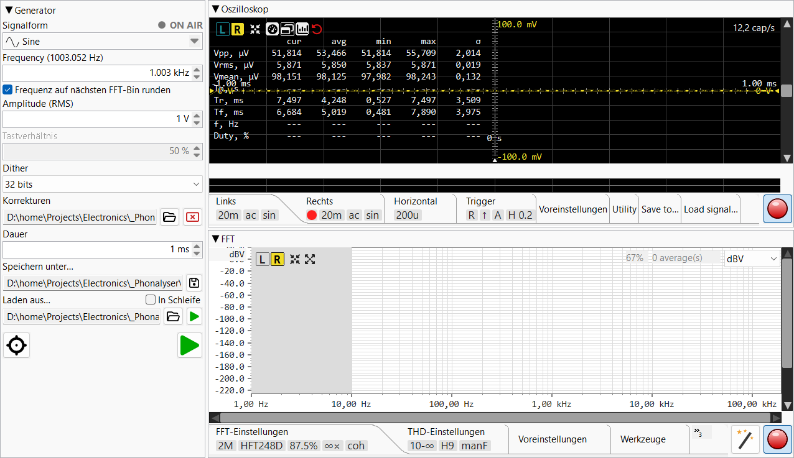

Präzisions-Audiomessplatz: Signalgenerator, Oszilloskop, FFT-Analysator.
Drücken Sie F1 an beliebiger Stelle in der Anwendung, um diese Hilfe zu öffnen. Drücken Sie Ctrl+F1, um direkt zum Abschnitt zu springen, der das aktuell fokussierte Steuerelement beschreibt.
🚀 Das kürzeste HOW-TO der Welt — die gesamte THD-Messung in Teilen pro Milliarde, von der Kalibrierung bis zum Ergebnis, auf einem Bildschirm. Hier starten.
🔍 Index & Suche — das gesamte Handbuch durchsuchen oder die A–Z-Liste der Themen und Begriffe durchblättern.
💡 Tipps — kleine Dinge, die einen großen Unterschied machen; werden beim Start auch einzeln angezeigt.
🙏 Danksagungen — Inspiration und Dank.

Das Hauptfenster ist in einen Generator-Bereich auf der linken Seite aufgeteilt (dessen Breite anpassbar ist — Trennleiste ziehen oder in den Einstellungen festlegen) und eine vertikale Trennleiste zwischen Oszilloskop (oben) und FFT-Analysator (unten) auf der rechten Seite. Jeder Bereich lässt sich durch Doppelklick auf die Titelleiste auf seinen Titelstreifen einklappen; ein erneuter Doppelklick stellt ihn wieder her.
Jedes Modul hat seine eigene Werkzeugleiste — einen Einstellungs-Tab-Streifen unterhalb der Hauptansicht mit Tabs für die modulspezifischen Einstellungen. Der Tab-Streifen lässt sich seinerseits einklappen (Doppelklick auf den Streifen), um vertikalen Platz für das sichtbare Diagramm zurückzugewinnen.
V/div,
t/div, FFT length haben kleine Auf-/Ab-Pfeile.
Das Mausrad scrollt durch Standardwerte
(1-2-5-10); ein manuell eingetippter Wert wird akzeptiert, wenn er
für das Feld sinnvoll ist.Hilfe → Über Phonalyser zeigt die Version und Links zum Projekt-Repository. Verwenden Sie Hilfe → Problem melden, um ein Issue auf GitHub einzureichen.